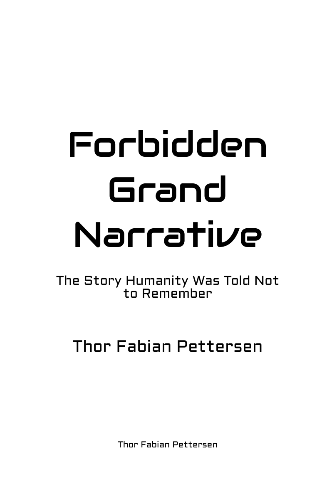

The complete work
Forbidden
Grand
Narrative
The Story Humanity Was Told Not to Remember
About the work
One question beneath everything
A long-form inquiry moving through philosophy, the occult, alternative history, consciousness, cosmology, symbolism, religion, mystery, and the structure of reality.
“This book was not written to provide comfort. It was written because too many pieces refused to remain separate.”
Complete contents
123 chapters
Choose any chapter. Each entry opens the original book at that chapter’s starting page.
Dedicationp. 1Epigraphp. 2Prologuep. 3Introductionp. 10This Workp. 121.Sciencep. 152.On Beliefp. 163.Griftersp. 214.WARNING! WARNING! WARNING!p. 515.A Letter to Sciencep. 586.Philosophyp. 657.How Did Everything Begin?p. 668.Timep. 779.The Meaning of Lifep. 8110.Balance as the Origin of Meaningp. 8411.Gravityp. 8912.Cosmic Sexp. 9213.Me vs Fuller: Two Views of Equilibriump. 9414.Cosmic Recyclingp. 10215.Free Energyp. 11416.White Hole Earthp. 12017.Repeatp. 12818.Repeat Repeatp. 14319.The Hollow Earthp. 15220.The Hollow Earth Modelp. 15821.Quantum Riddles Solvedp. 16922.My Personal Takep. 17623.Godp. 18224.“I Won’t Believe in God Until I See Evidence”p. 20625.The Convergence of Idealism and Godp. 20926.Ayaan Hirsi Alip. 21327.Problems with the Physical Worldp. 22028.Dream Theoryp. 22729.Ego Deathp. 23230.Life After Deathp. 23531.Infinite Lovep. 23732.Magicp. 23933.THE EARTH IS THE CENTER OF CREATIONp. 24234.Fermi Paradoxp. 25235.Evolution is Falsep. 25436.The Church Bellp. 26937.Free Willp. 27638.Internal Evolution Theory (IET)p. 28739.World Buildingp. 30340.Backwardsp. 32041.Solar Logosp. 32242.The Twinsp. 33243.The Creation of Lifep. 33644.The Womb of the Earthp. 34045.Closurep. 34846.Fragmentationp. 36447.Aegisp. 36948.Conspiracyp. 37349.Intellectually Lazyp. 37450.Flat Earthp. 37751.Fortnitep. 38252.Films and Games Featuring Symbolic, Esoteric, and Mythological Themesp. 38553.Space Is Fakep. 38854.NASAp. 39355.Bigfootp. 39556.Aliensp. 39957.Elongated Skullsp. 41358.Fairiesp. 41859.Humans Never Actually Went to the Moonp. 42160.Conspiracy Logicp. 43061.The Rabbit Duckp. 43562.The World Is a Stagep. 43863.Trumanp. 43964.The Aztecsp. 45165.Stargatep. 45666.2nd Moon!p. 46767.When the World Ends This Timep. 47168.SOUL RECYCLERp. 47769.The Facep. 48270.Technologyp. 49171.Regenerationp. 49272.Sum to Zerop. 49873.Biological Immortalityp. 51774.The Book of Aquariusp. 52875.The Everburning Lampp. 53376.Crystalsp. 53677.Vimānap. 55178.The Grandfather Paradox (solved)p. 55679.RVp. 56780.Spiritualp. 56981.Jesus Christp. 57082.The Ancestral Humanoid: We Are All White!p. 58283.Shroud of Turin: Ascensionp. 59284.Buddhap. 60985.Santa Clausp. 61986.Karmap. 64487.The Soulp. 64888.The Game of Creationp. 65489.DMT Entities, DMT Families, and Soul Groupsp. 66690.Ghostsp. 67491.Just an Ordinary Dayp. 68892.The Cosmic Joke, The Cosmic Riddle - It’s All a Circle!p. 70693.The Real Meaning of Life: Reality Is Spiritualp. 71594.Mysteryp. 72395.The Philosopher’s Stone (solved)p. 72496.Precision Vasesp. 76997.The Aztlán Stonesp. 77198.360p. 77799.Miscellaneousp. 779100.Codap. 780101.Fairylandp. 781102.How Many Times Have I Incarnated?p. 787103.My View on Aliensp. 789104.Nonexistencep. 791105.Repeat Repeat Repeatp. 794106.The ON Switchp. 806107.Summary of the DEMU Ideap. 809108.My Pointp. 816109.The Mirrorp. 817110.1p. 823111.The Mermaidp. 825112.YouTubep. 830113.Greenp. 832114.Zeusp. 836115.Bad Backsp. 838116.King Kong Theoryp. 841117.Origins of Manp. 878118.Do You Truly Believe in Jesus Christ?p. 883119.More Rabbit Holesp. 897120.Is It Really Just a Coincidence?p. 899121.Cosmic Coincidencep. 902122.The Logosp. 904123.Why So Many Pictures?p. 905Epiloguep. 907About the authorp. 911Full Disclaimerp. 916